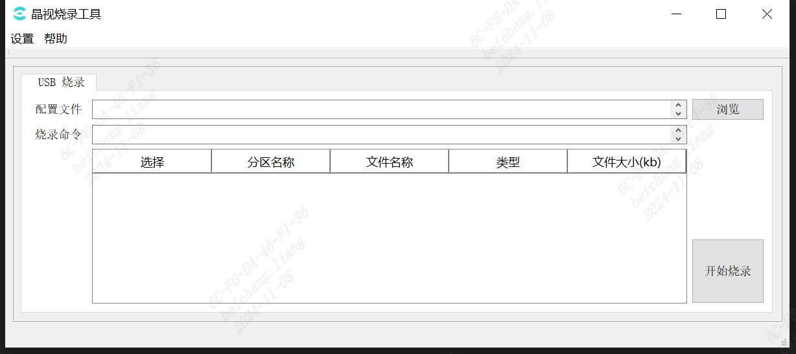
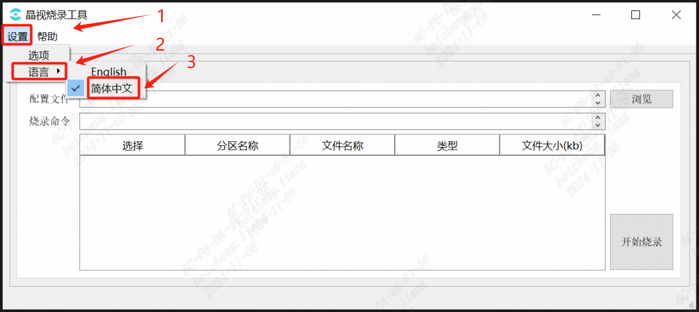
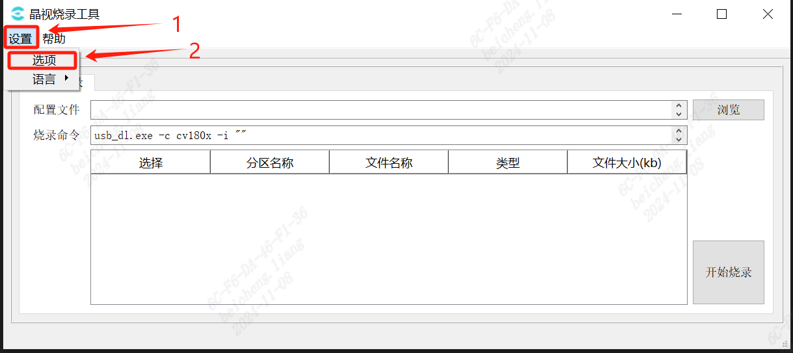
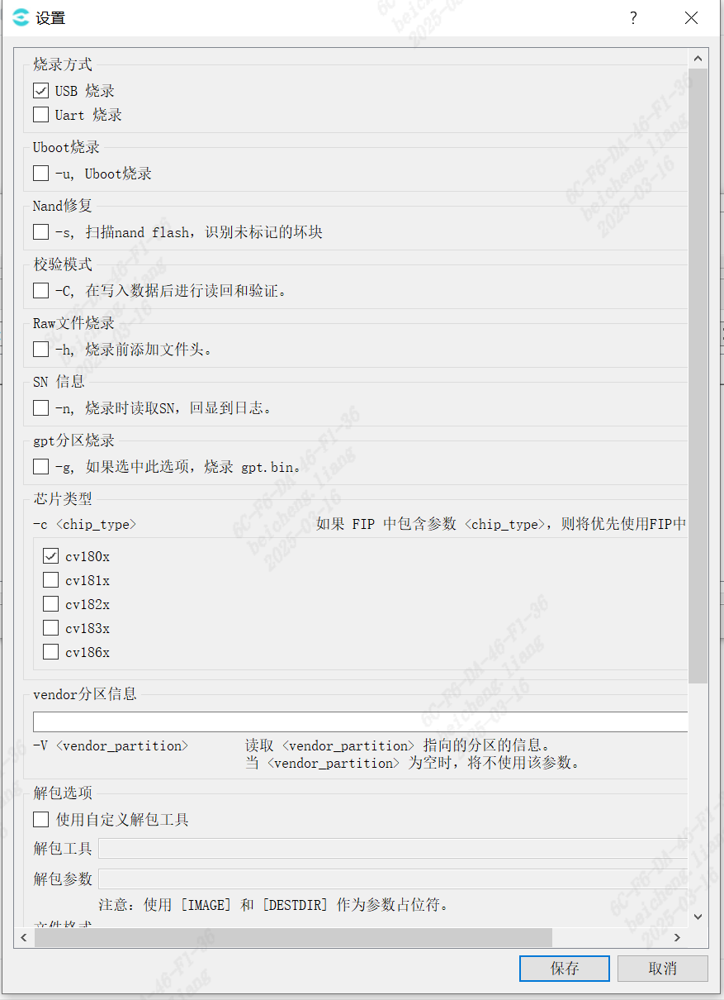
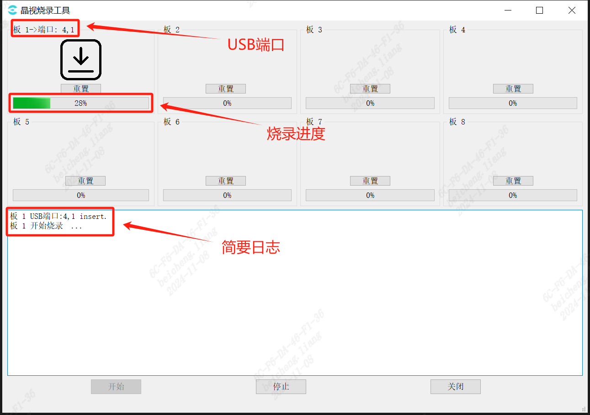
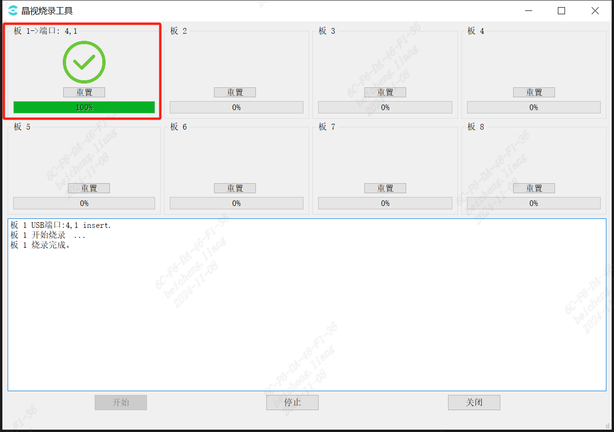
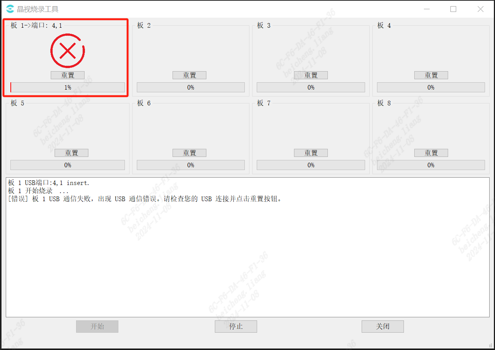
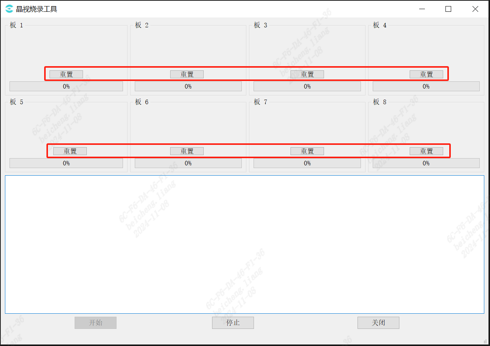

3.4. cviDownloadTool 工具¶
3.4.1. cviDownloadTool工具介绍¶
cviDownloadTool工具是一款可视化烧录工具， 支持裸片烧录，也支持U-Boot烧录（需设备硬件支持） 最多可以支持8台设备同时烧录。
注解
通过USB来烧录单板需要满足以下条件:
PC机USB接口与单板的USB2.0口对接
单板必须满足一次系统复位，可以上电复位或者系统软复位
以上条件必须同时满足时，单板才能进入USB烧录流程
3.4.2. cviDownloadTool 使用方法¶
3.4.2.1. 烧录工具操作流程¶
步骤1.1
打开烧录工具，进入到主界面。
{kind=link}

图 3.4 晶视烧录工具界面¶
步骤1.2
点击 设置->语言 进行语言选择。
{kind=link}

图 3.5 晶视烧录工具语言选择¶
步骤1.3
配置烧录工具参数
用户在烧录前的第一个步骤应当是打开 设置 栏，按照当次烧录的需求进行配置。 打开烧录工具左上角的菜单栏，依次选择 设置->选项，配置烧录所需的各个配置项。
{kind=link}

图 3.6 设置按钮¶
{kind=link}

图 3.7 设置界面¶
设置选项
- 烧录方式:
UART烧录： 使用UART口进行烧录。
USB烧录： 使用USB口进行烧录。
Uboot烧录: 若勾选此项，使用板端自带的U-Boot进行烧录，否则通过USB口加载镜像文件的U-Boot进行烧录。
校验模式: 若勾选此项，在烧录时进行数据读回并进行校验。
Raw文件烧录: 若输入的镜像文件不具备文件头，需勾选此项。
SN信息: 烧录时读取sn码，并在烧录时打印到详细日志中。
gpt分区烧录: 勾选此选项，烧录时包含gpt分区。
芯片类型: 需烧录设备对应的芯片类型，当镜像包的fip文件中包含了该参数时，优先使用fip中的参数。
vendor分区信息: 输入值为分区下标，若该值非空时，烧录时读取对应的vendor分区值并打印到详细日志中。
解包选项:
使用自定义解包工具: 勾选此项，即可自定义解包工具。
解包工具: 选择自定义的解包工具，该工具必须为exe文件，且可以通过命令行执行的方式进行解包。
解包参数: 解包工具的命令行参数，使用[IMAGE]和[DESTDIR]占位符来作为命令行中的镜像路径和目的路径，如 -unpack [IMAGE] [DESTDIR]。
文件格式: 镜像压缩包的文件格式后缀。
烧录文件选择：允许在主界面自定义分区表上的哪些文件不需要被烧录。
烧录详情: 在勾选此项后，主界面会显示烧录时使用的命令行参数。
按键烧录: 若需烧录的板子需要按下烧录按键才进入烧录模式，则需勾选此选项。
注解
当不清楚设备的软硬件环境是否支持指定选项时，请勿随意勾选该选项，否则可能导致无法成功烧录。
步骤1.4
点击 浏览 按钮，找到需要被烧录的文件系统配置xml文件，或镜像文件的压缩包。

图 3.8 点击 浏览 按钮¶
注解
若选择的是压缩包，在解压之前会检测同级目录下是否存在cviBurnUnpackDir文件夹，若存在会将其删除，以删除旧的镜像文件！
该文件用于保存从镜像中解压出来的所有文件，请在放置烧录固件文件的时候尽量避免所在路径存在同名文件夹。
请确保镜像压缩包文件的内容仅有一个xml或yaml文件，当前工具会检索xml或yaml文件的路径作为烧录路径。
若目录下必须同时存在xml和yaml文件，请手动解压镜像包，并点击 浏览 按钮选中xml或yaml文件。
步骤1.5
选好文件后，点击确认，便会出现如 图 3.9 ， 表格中会列出需要被烧录进去的文件以及他们的属性， 用户可以通过手动取消勾选，表示哪些文件不需要被烧录。

图 3.9 选择需要下载的文件¶
步骤1.6
点击 开始烧录 按钮，进入烧录子页面。
此时已经是就绪状态，可以直接开始烧录。

图 3.10 点击 开始烧录 按钮¶
可以通过下方的按钮来改变烧录工具当前的状态。

图 3.11 点击 开始烧录 按钮¶
步骤1.7
- 进入就绪状态之后:
UART烧录：插入UART口，待进度条出现后，设备上电即可进入烧录。
USB烧录：可以将设备插入到USB HUB中并开机，烧录程序会自动启动。
简要日志中打印的是当前插入的USB设备，并且会在上方的方框标题显示插入板子对应的USB端口。
烧录开始了之后进度条会展示当前设备的烧录进度。
{kind=link}

图 3.12 插入USB设备开始烧录¶
附：USB端口的对应关系：
将USB接口插入电脑之后，软件会自动识别插入的USB设备并为其编号，无需用户设置。
在电脑与单板建立连接之后，会在对应的Board窗口展示其端口号。
根据插入的顺序，依从左往右、从上至下的顺序排列在软件界面上。
USB 端口由两部分组成，例如 端口：4,1中，
4表示当前HUB的编号，
1表示该HUB上的USB编号
（实物HUB上标记的编号和电脑识别的可能不一致，这里以电脑标记的HUB号为主）。
建议用户在插入USB之后为其做好标记，以免造成混淆。
这样在量产时便可以通过软件显示的USB 端口与实际单板一一对应，方便查看每个单板的状态。
注解
为了使USB 端口能够依次正确读取，请先将USB HUB插入电脑后再依次插入单板。
请勿先将单板插入USB HUB之后再一次性将HUB插入电脑，此操作可能造成无法正确读取USB端口。
步骤1.8
烧录成功：
烧录完成后状态栏会有一个“版 x 烧录完成.”提示，图标栏也会显示如下图标。
烧录成功后只需拔掉设备，然后插入新的设备即可进行新一轮的烧录。
{kind=link}

图 3.13 烧录成功¶
烧录失败：
若烧录过程中因各种原因导致烧录失败的话，对应烧录失败的Board框内图标会显示“⊗”， 日志会提示“版 x 烧录失败，请检查连接并点击重置按钮.”，
如 图 3.14。此时可点击“重置”按钮对单个板子重新启动烧录程序。
{kind=link}

图 3.14 烧录失败¶
重置:
每个板子对应的框内都含有 重置 按钮，点击 重置 按钮可将对应的烧录程序重置， 重新进入就绪状态，此时将未烧录成功的板子需要将设备拔掉、关机、再重新插入、开机， 烧录程序会重新启动对板子进行烧录。
{kind=link}

图 3.15 重置 按钮¶